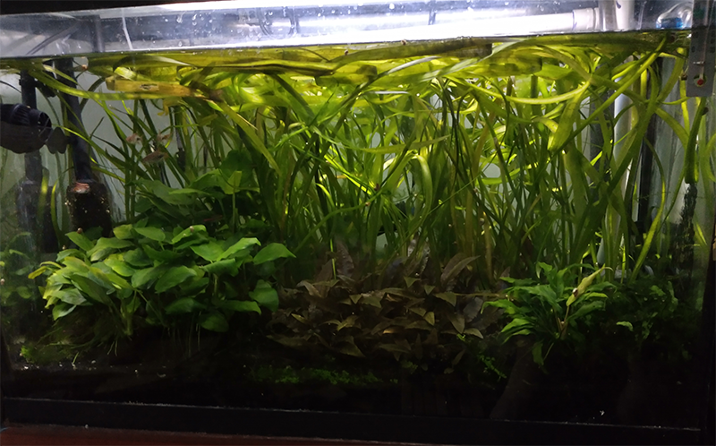
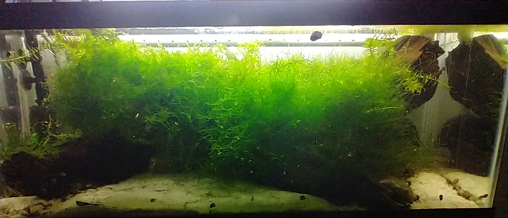
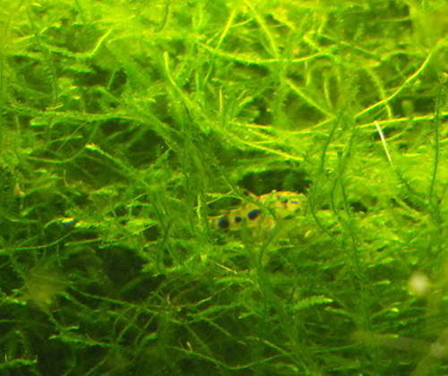
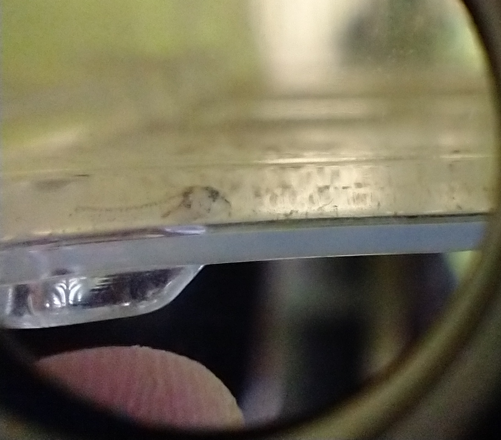

My Aquariums
Community Tank
 This is the first aquarium I got many years ago. It's gone through many revisions, but currently it's stocked with jungle vals, anubias, cryptocorynes and duckweed. This is what is considered a "high tech" setup; to provide enough CO2 for the plants, CO2 gas injected into a mixer along with water from the aquarium until it dissolves and then that water is returned to the aquarium. There are a few Harlequin rasboras and some debauwi catfish.
Corydoras Tank
 This is my second tank. It is filled with java moss and contains two species from the genus Corydoras, C. habrosus and C. julii.
 A juvenile C. habrosus rests among the moss. The adults reach around 1.5 inches. This young one is around 3/4 of an inch.
 A C. habrosus fry around one week after hatching. It measures a few milimeters.
Shrimp
 This is my third and also my smallest tank. stocked only with shrimp and java moss.
This is my third and also my smallest tank. stocked only with shrimp and java moss.
 Despite being being the smallest of my tank, it is able to sustain several dozen shrimp.
Despite being being the smallest of my tank, it is able to sustain several dozen shrimp.
The female shrimp fan their eggs to keep them oxygenated as seen in this clip.